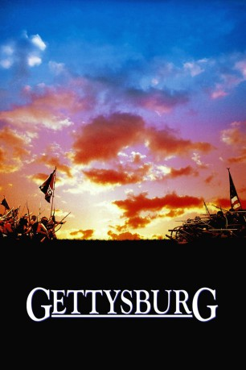

#3960 Gettysburg
 
 IMDB-Wertung: 7.7 / 10
IMDB-Wertung: 7.7 / 10  Tomatometer: 80
Tomatometer: 80  Metascore: 0
Metascore: 0 
Der Film erzählt die Geschichte der blutigsten Schlacht, die je auf amerikanischem Boden ausgetragen wurde, der Schlacht von Gettysburg. In den drei Tagen dieser Schlacht verloren über 7.000 Soldaten ihr Leben, weitere 45.000 wurden verwundet. Sie stellt einen der Wendepunkte des Sezessionskrieges dar.Neben grandiosen Schlachtsequenzen werden auch die Konflikte zwischen den kommandierenden Offizieren auf Seiten der Konföderierten, verkörpert von Martin Sheen und Tom Berenger, ausführlich behandelt. Zudem wird durch die Episode um General Amistead deutlich gemacht, wie stark der Krieg die gesamte amerikanische Bevölkerung in zwei Lager teilte: der vormals beste Freund des Generals ist nun sein Feind.
Jahr: 1993
Dauer: 271 Minuten
FSK: 16
Land: USA Studio: New Line CinemaTonspuren:
Untertitel: Deutsch,
Auflösung: 720p (1280x720) Größe: 8130 MB
Genre: Drama, Krieg, Geschichte
Regisseur: Ron Maxwell
Drehbuch: Dan Aykroyd
Soundtrack:
Darsteller:
 Tom Berenger als Lieut. Gen. James Longstreet
Tom Berenger als Lieut. Gen. James Longstreet Martin Sheen als Gen. Robert E. Lee
Martin Sheen als Gen. Robert E. Lee Stephen Lang als Maj. Gen. George E. Pickett
Stephen Lang als Maj. Gen. George E. Pickett Richard Jordan als Brig. Gen. Lewis A. Armistead
Richard Jordan als Brig. Gen. Lewis A. Armistead Andrew Prine als Brig. Gen. Richard B. Garnett
Andrew Prine als Brig. Gen. Richard B. Garnett Cooper Huckabee als Henry T. Harrison
Cooper Huckabee als Henry T. Harrison- Patrick Gorman als Maj. Gen. John Bell Hood
- Bo Brinkman als Maj. Walter H. Taylor
- James Lancaster als Lieut. Col. Arthur Fremantle
 William Morgan Sheppard als Maj. Gen. Isaac R. Trimble / Narrator
William Morgan Sheppard als Maj. Gen. Isaac R. Trimble / Narrator- Kieran Mulroney als Maj. G. Moxley Sorrel
 James Patrick Stuart als Col. E. Porter Alexander
James Patrick Stuart als Col. E. Porter Alexander Royce D. Applegate als Brig. Gen. James L. Kemper
Royce D. Applegate als Brig. Gen. James L. Kemper- Joseph Fuqua als Maj. Gen. J.E.B. Stuart
- George Lazenby als Brig. Gen. J. Johnston Pettigrew
- Trent Walker als Rebel Prisoner
- Rick Leisenring als Confederate Voice
- Tom Mays als Early's Courier
 Jeff Daniels als Col. Joshua Lawrence Chamberlain
Jeff Daniels als Col. Joshua Lawrence Chamberlain Sam Elliott als Brig. Gen. John Buford
Sam Elliott als Brig. Gen. John Buford C. Thomas Howell als Lieut. Thomas D. Chamberlain
C. Thomas Howell als Lieut. Thomas D. Chamberlain Kevin Conway als Sgt. 'Buster' Kilrain
Kevin Conway als Sgt. 'Buster' Kilrain Buck Taylor als Col. William Gamble
Buck Taylor als Col. William Gamble John Diehl als Private Bucklin
John Diehl als Private Bucklin John Rothman als Maj. Gen. John F. Reynolds
John Rothman als Maj. Gen. John F. Reynolds Richard Anderson als Maj. Gen. George G. Meade
Richard Anderson als Maj. Gen. George G. Meade Billy Campbell als Lieut. Pitzer
Billy Campbell als Lieut. Pitzer- David Carpenter als Col. Thomas C. Devin
 Maxwell Caulfield als Col. Strong Vincent
Maxwell Caulfield als Col. Strong Vincent Donal Logue als Capt. Ellis Spear
Donal Logue als Capt. Ellis Spear Dwier Brown als Capt. Brewer
Dwier Brown als Capt. Brewer- Ken Burns als Hancock's Aide
- John Heffron als Sgt. Charles H. Veil
 Matt Letscher als Young 2nd Maine Man
Matt Letscher als Young 2nd Maine Man- Barry McEvoy als 2nd Maine Soldier
 Mark Moses als Sgt. Owen
Mark Moses als Sgt. Owen- Olivia Maxwell als Taneytown Girl
 Bill Chemerka als Confederate soldier , uncredited
Bill Chemerka als Confederate soldier , uncredited- Kevin R. Hershberger als Confederate Soldier , uncredited
- Ted Turner als Col. Waller T. Patton , uncredited
- Tim Ruddy als Maj. Charles Marshall
- Ivan Kane als Cap. Thomas J. Goree
- Warren Burton als Maj. Gen. Henry Heth
- MacIntyre Dixon als Maj. Gen. Jubal A. Early
 Timothy Scott als Lieut. Gen. Richard S. Ewell
Timothy Scott als Lieut. Gen. Richard S. Ewell- Alex Harvey als Maj. Hawkins
- Charles Lester Kinsolving als Brig. Gen. Willilam Barksdale
- Ted Kozlosky als Confederate Lieutenant
- Henry Atterbury als Lee's Aide
- Graham Winton als Maj. Gen. Robert E. Rodes
Datei: X:\1993\Gettysburg (1993, FSK16, 1280x720).mkv seit 06.07.2016
Festplatte: HD 1992-1995
 Es gibt insgesamt 68 Filme in der Gruppe '1993'
Es gibt insgesamt 68 Filme in der Gruppe '1993'